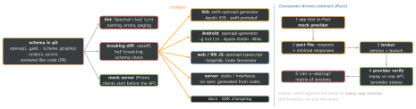

engineering · folio
In one line: Teams stop arguing about JSON when one machine-readable schema — OpenAPI, GraphQL SDL, Protobuf or JSON Schema — is the source of truth in version control: every client and the server generate their types from it, CI rejects breaking diffs, and contract tests prove the provider still serves what each consumer uses — a mismatch fails a build, not a user’s app.
Download PDF Print view LaTeX source


The four contract languages
| shape | evolution rule | |
|---|---|---|
| OpenAPI | REST/JSON; 3.1 = JSON Schema 2020-12 inside | add optional fields; deprecated: true; breaking → new path/version |
| GraphQL | one typed graph; clients pick fields per operation | never version: add fields, @deprecated(reason:), remove when unused |
| Protobuf | binary; field numbers are the wire identity | never reuse a number (reserved 3); unknown fields are kept |
| JSON Schema | payloads, events, config; validates at runtime | same as OpenAPI; codegen via quicktype etc. |
Safe vs breaking — the table that matters
| safe | breaking |
|---|---|
| add endpoint / operation | remove or rename a field / path |
| add optional response field | change a type (int → string) |
| add optional request field | make a request field required |
| loosen validation | tighten validation, shrink limits |
| add enum case if clients tolerate unknowns | add enum case for strict decoders |
Example — OpenAPI → Swift, generated at build time
paths:
/orders/{id}:
get:
operationId: getOrder
parameters: [{name: id, in: path, required: true,
schema: {type: string}}]
responses:
'200': {content: {application/json:
{schema: {$ref: '#/components/schemas/Order'}}}}
# openapi-generator-config.yaml (beside it, in the target)
generate: [types, client]
accessModifier: internallet client = Client(serverURL: URL(string: "https://api.example.com")!,
transport: URLSessionTransport())
switch try await client.getOrder(path: .init(id: "42")) {
case .ok(let ok): let order = try ok.body.json // Components.Schemas.Order
case .undocumented(let status, _): throw APIError.unexpected(status)
}swift-openapi-generator (Apple): SwiftPM build plugin, OpenAPI 3.0/3.1 (3.2 preliminary), transports for URLSession, AsyncHTTPClient, Vapor, Hummingbird; nothing generated is committed; every status is an enum case.
Contract tests — what they prove
- Schema checks prove the shape is compatible. Consumer-driven contracts (Pact) prove the provider still serves what each consumer actually uses — the consumer’s test writes the contract, the provider’s CI replays it.
- Provider states (“given order 42 exists”) seed each replay;
can-i-deployasks the broker if this version fits what is deployed — a gate for both sides. - Pact ≠ E2E: contracts, not business behaviour. Bi-directional: pact vs OpenAPI.
Versioning and deprecation
- Prefer additive evolution, no version bump. Breaking: new field/endpoint beside the old, or
/v2, or a dated header version (Stripe style). - Deprecate in the schema, then on the wire:
Deprecation: @1688169599(RFC 9745, 2025) +Sunset:(RFC 8594) — sunset never earlier than deprecation. - Measure usage per app version (
User-Agent, an app-version header); remove only when traffic is ~0 or a minimum-version / force-update gate covers it.
Sharing models with React Native
- JS layer: TS types from the same schema (openapi-typescript, GraphQL Code Generator), not hand-written DTOs.
- JS ↔ native: the TurboModule TS spec is itself a typed contract — Codegen emits the ObjC++/Java interfaces; a mismatch fails the native build. Alternatives: KMP shared models for Android + iOS.
API review process
RFC with the schema diff → CODEOWNERS from each client team → lint + breaking check block the merge → mock + SDKs published → changelog → deprecation window in app adoption, not weeks.
Traps
- “Adding an enum value is backward compatible” — a strict
Codableenum throws and the whole response fails. Decode unknowns to.unknown. - Server sends
nullwhere the schema says non-nullable — the decoder fails. Validate responses against the schema in backend tests, or the spec drifts. - Renaming a proto field is wire-safe for binary but breaks ProtoJSON and generated names; reusing a field number silently corrupts data.
- Hand-editing generated code — overwritten next build; extend it instead.